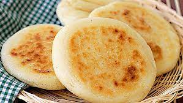

Arepa

Description
Arepas are cornmeal cakes that originated hundreds of years ago in a region that now makes up Colombia, Venezuela, and Panama.
Traditionally, they were cooked on a pan called a budare. But they can also be grilled, baked, or fried.
Venezuelan arepas tend to be smaller and thicker, while Colombian arepas tend to be sweeter, thinner, and stuffed with cheese.
Our version more closely resembles Venezuelan arepas.
Ingredients
- 2 1/2 cups Lukewarm water
- 1 tbsp. Salt
- 2 cups Pre-cooked white cornmeal (such as P.A.N)
- 1/4 cup Vegetable oil, or as needed
Steps
- Stir water and salt together in a medium bowl; gradually stir in cornmeal with your fingers until the mixture forms a soft, moist, malleable dough.
- Form dough into eight 2-inch diameter balls; pat each ball to flatten into a 3/8-inch-thick arepa patty.
- Heat oil in a large skillet over medium heat; fry arepas in batches until golden brown, about 4 to 5 minutes per side. Transfer cooked arepas to a paper towel-lined plate to drain until cool enough to handle.
- Slice halfway through each arepa horizontally with a thin serrated knife to form a pita-like pocket.